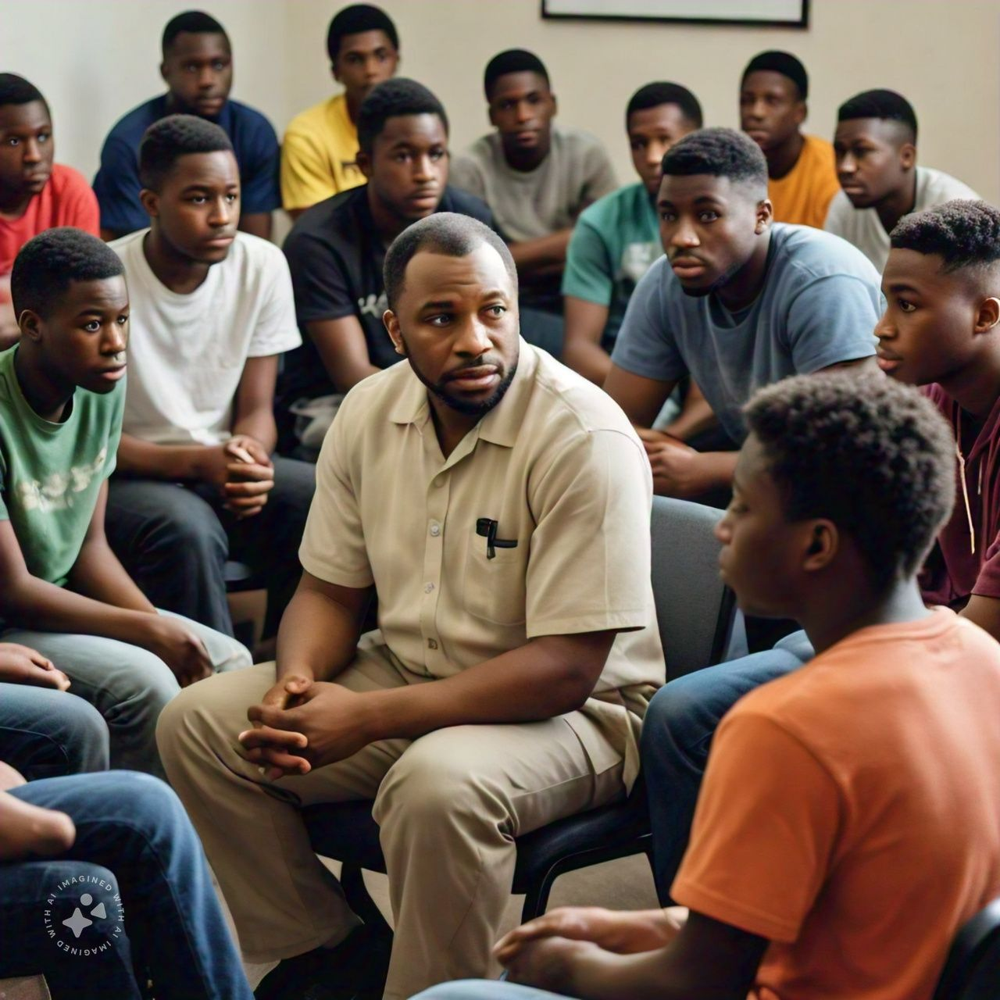
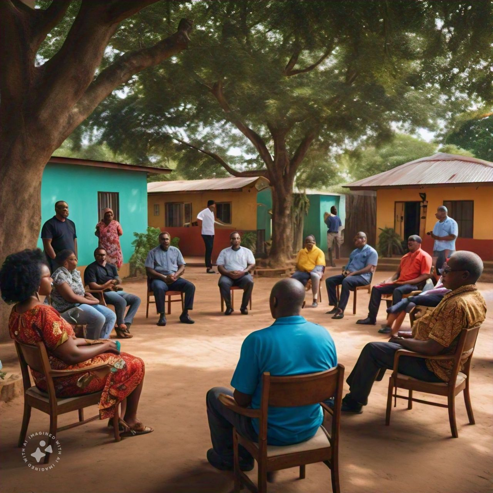

Residential Rehabilitation Program
- Discipleship: Spiritual growth and development are encouraged through Bible studies, prayer sessions, and faith-based activities that nurture the participants' spiritual well-being.
- Mentorship: Participants are paired with mentors who provide personalized guidance, support, and encouragement, helping them navigate their rehabilitation journey and develop essential life skills.
- Psychiatric & Psychological Assessments: Regular assessments by qualified mental health professionals ensure that any underlying psychiatric or psychological issues are identified and appropriately treated.
- Detoxification: For individuals struggling with substance abuse, a medically supervised detox process is provided to safely manage withdrawal symptoms and prepare them for further treatment.
- Counseling: Both individual and group counseling sessions are available to address emotional, behavioral, and psychological issues, fostering mental health and resilience.
- Life Skills Training: Training in essential life skills, such as communication, financial management, and job readiness, equips participants for independent living and successful societal reintegration.
- Leadership Training: Leadership development activities empower participants to become positive role models and community leaders, fostering a sense of purpose and direction.
Non-residential Rehabilitation Program
- Virtual Support: Participants can access ongoing support through online platforms, allowing them to connect with professionals and resources from their homes.
- Counseling: Virtual counseling sessions with licensed therapists address emotional and psychological needs, helping participants manage their mental health and overcome challenges.
- Resources and Tools: A variety of online resources, including self-help materials, educational content, and interactive tools, support participants in their recovery process.

Living Free Outreaches
- Schools: Outreach programs in educational institutions raise awareness about mental health, substance abuse, and related issues through workshops, seminars, and interactive sessions, engaging students and staff.
- Churches: Collaborations with local churches provide faith-based workshops, support groups, and counseling services to congregants, fostering a supportive community environment.
- Communities: Public awareness campaigns, workshops, and events educate the community about mental health, addiction, and the importance of seeking help, reducing stigma and encouraging resource access.
Family Support and Aftercare
- Internal Support: Family counseling sessions, workshops, and support groups involve families in the rehabilitation process, helping them understand and support their loved ones effectively.
- External Support: After graduation, participants and their families continue to receive follow-up counseling, community resources, and support networks to ensure a smooth transition back into society and reduce relapse risks.
- Integration Programs: Tailored programs, including job placement assistance, educational opportunities, and community engagement activities, support graduates in achieving long-term success and stability.

ONLINE APPLICATION FORM
GET HELP TODAY!
Applying to King’s Way Rehabilitation is simple. Just fill out the information required below and submit your application along with the processing fee. Acceptance of your application will be dependent on meeting all admission requirements.
If you are accepted, you will be placed on a waiting list pending available space. When a bed becomes available, your entrance day will be scheduled. To maintain your position on the waiting list, you are required to call the center weekly to demonstrate your continued interest in the program. You may be asked to participate in a program at the center.
Apply Now